01Úvod
Hlasová komunikácia cez IP siete (VoIP) dnes vo firmách, na úradoch aj u telekomunikačných operátorov takmer úplne nahradila klasickú analógovú a ISDN telefóniu. Hovory sa prenášajú tou istou dátovou sieťou ako e-maily či web, čo výrazne znižuje náklady a umožňuje funkcie ako presmerovanie, konferencie, hlasové schránky alebo prácu z domu. Na rozdiel od klasickej telefónie, kde bol hovor fyzicky oddelený v samostatnom okruhu, však VoIP zdedilo aj všetky hrozby, ktoré poznáme z počítačových sietí.
Nadviazanie, priebeh a ukončenie hovoru riadi signalizačný protokol SIP (Session Initiation Protocol) a samotný hlas sa prenáša v paketoch protokolu RTP (Real-time Transport Protocol). Oba protokoly sú v základnej podobe nešifrované. Útočník s prístupom k sieti, napríklad na zdieľanej Wi-Fi alebo v kompromitovanom prepínači, preto môže hovor zachytiť a spätne prehrať (nástrojmi ako Wireshark alebo sngrep). Zo signalizácie zároveň vidí, kto komu a kedy volá. Medzi ďalšie typické hrozby patrí odcudzenie prihlasovacích údajov a zneužitie účtu na drahé hovory (toll fraud), podvrhnutie registrácie alebo útoky na dostupnosť ústredne.
Cieľom projektu je prakticky nasadiť dve najrozšírenejšie open-source VoIP platformy, ústredňu Asterisk a SIP proxy Kamailio, a na oboch overiť koncové (end-to-end) šifrovanie hovoru pomocou protokolu ZRTP medzi softvérovými telefónmi PhonerLite a Linphone. Dokumentácia najprv stručne opisuje súčasné spôsoby zabezpečenia VoIP. Potom krok za krokom ukazuje inštaláciu a konfiguráciu oboch serverov vrátane všetkých príkazov a konfiguračných súborov, priebeh šifrovaného hovoru a nakoniec zhŕňa dosiahnuté výsledky a obmedzenia riešenia.
02Súčasný stav
Zabezpečenie VoIP sa rieši na dvoch úrovniach. Signalizáciu SIP chráni transport TLS (SIPS, port 5061) a hlas chráni SRTP (RFC 3711), ktoré šifruje RTP pakety pomocou AES. Kľúčovou otázkou je, ako sa obe strany dohodnú na kľúči pre SRTP:
| Metóda | Ako sa vymení kľúč | Hlavná nevýhoda |
|---|---|---|
| SDES | Kľúč je priamo v SDP vnútri SIP správy. | Bezpečné iba s TLS; každý SIP server na ceste kľúč vidí. |
| DTLS-SRTP (RFC 5764) | DTLS handshake v mediálnom kanáli, certifikáty. | Treba overiť odtlačok certifikátu; štandard vo WebRTC. |
| ZRTP (RFC 6189) | Diffie-Hellman priamo medzi telefónmi v mediálnom kanáli, bez PKI. | Používatelia musia porovnať krátky overovací kód (SAS). |
ZRTP, ktorého autorom je Phil Zimmermann (autor PGP), nepotrebuje certifikáty ani dôveru v servery. Kľúč si telefóny dohodnú výmenou Diffie-Hellman priamo v RTP toku, takže ústredňa ani proxy ho nikdy nepoznajú. Proti útoku typu Man-in-the-Middle chráni SAS (Short Authentication String): obaja účastníci si nahlas prečítajú krátky kód a ak sa zhoduje, nikto nie je uprostred. Po prvom overení si telefóny uložia zdieľané tajomstvo (key continuity) a pri ďalších hovoroch už zariadenie považujú za dôveryhodné. Linphone navyše ponúka Post-quantum ZRTP, ktoré kombinuje klasickú výmenu kľúčov s postkvantovým algoritmom.
Pre ZRTP je dôležitý rozdiel medzi oboma servermi. Asterisk je ústredňa (PBX, B2BUA): hovor ukončuje a môže spracúvať aj médiá (nahrávanie, hlasová schránka, prekódovanie). Kamailio je čistá SIP proxy a registrar: rieši iba signalizáciu, zvládne tisíce hovorov za sekundu a hlas tečie priamo medzi koncovými zariadeniami.
03Praktická ukážka
Ukážka prebiehala na školskom Linux serveri (prístup cez PuTTY) s dvoma softvérovými telefónmi na Windows: PhonerLite (linka 2000) a Linphone (linka 2001). Postup vychádza zo zadania cvičenia [1].
3.1 Topológia
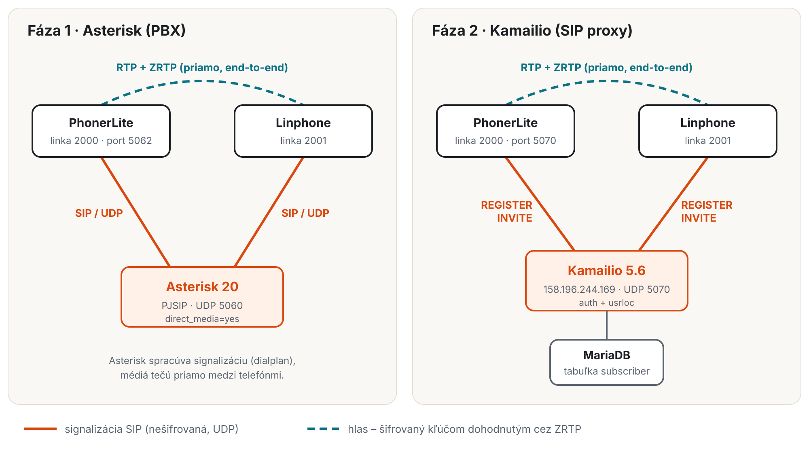
3.2 Inštalácia Asterisk 20
-
Aktualizácia systému a nástroje na kompiláciu
apt update apt install -y git wget curl cmake libldns-dev build-essential autoconf automake libtool pkg-config -
Stiahnutie a rozbalenie zdrojových kódov
cd /usr/src wget https://downloads.asterisk.org/pub/telephony/asterisk/asterisk-20-current.tar.gz tar -xzf asterisk-20-current.tar.gz ls -d asterisk-20.*/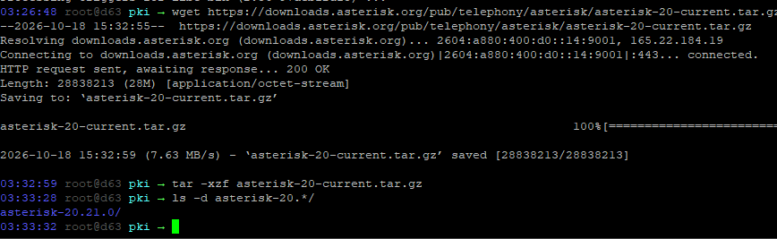
Obr. 2 Stiahnutý a rozbalený archív, priečinok asterisk-20.21.0. -
Závislosti a konfigurácia
Skript
install_prereqdoinštaluje potrebné balíčky podľa oficiálneho postupu. Prepínač--with-pjproject-bundledpoužije knižnicu PJSIP vo verzii otestovanej s Asteriskom.cd asterisk-20.21.0 ./contrib/scripts/install_prereq install ./configure --with-pjproject-bundled -
Kompilácia, inštalácia a overenie verzie
make -j4 make install make samples # vzorové konfiguračné súbory make config # systémová služba /sbin/ldconfig asterisk -V # výstup: Asterisk 20.21.0
3.3 Účty PJSIP
Po zálohovaní pôvodnej konfigurácie sa vygenerujú dve silné heslá (pre linky 2000 a 2001) a súbor pjsip.conf sa nahradí vlastnou konfiguráciou.
cp /etc/asterisk/pjsip.conf /etc/asterisk/pjsip.conf.bak
openssl rand -hex 16 # heslo pre 2000
openssl rand -hex 16 # heslo pre 2001
nano /etc/asterisk/pjsip.conf[transport-udp]
type=transport
protocol=udp
bind=0.0.0.0:5060
; PHONERLITE - 2000
[2000]
type=endpoint
context=internal
disallow=all
allow=ulaw,alaw
auth=auth2000
aors=2000
transport=transport-udp
direct_media=no
rtp_symmetric=yes
force_rport=yes
rewrite_contact=yes
[auth2000]
type=auth
auth_type=userpass
username=2000
password=HESLO_2000
[2000]
type=aor
max_contacts=1
remove_existing=yes
; LINPHONE - 2001
[2001]
type=endpoint
context=internal
disallow=all
allow=ulaw,alaw
auth=auth2001
aors=2001
transport=transport-udp
direct_media=no
rtp_symmetric=yes
force_rport=yes
rewrite_contact=yes
[auth2001]
type=auth
auth_type=userpass
username=2001
password=HESLO_2001
[2001]
type=aor
max_contacts=1
remove_existing=yesendpoint (správanie linky), auth (prihlasovacie údaje) a aor (kam sa linka zaregistruje). Parametre rtp_symmetric, force_rport a rewrite_contact riešia prechod cez NAT. Hodnoty HESLO_2000 a HESLO_2001 nahraďte heslami z openssl.
3.4 Dialplan a spustenie
cp /etc/asterisk/extensions.conf /etc/asterisk/extensions.conf.bak
nano /etc/asterisk/extensions.conf[general]
static=yes
writeprotect=no
[internal]
exten => 2000,1,Dial(PJSIP/2000,30)
same => n,Hangup()
exten => 2001,1,Dial(PJSIP/2001,30)
same => n,Hangup()Po spustení služby sa prepne direct_media na yes a konfigurácia sa znova načíta:
systemctl start asterisk
systemctl status asterisk --no-pager
sed -i 's/^direct_media=no/direct_media=yes/' /etc/asterisk/pjsip.conf
/usr/sbin/asterisk -rx "pjsip reload"direct_media=yes Asterisk po nadviazaní hovoru presmeruje RTP priamo medzi telefóny a ZRTP prebehne medzi nimi.
3.5 Nastavenie klientov a ZRTP hovor
V PhonerLite sa nastaví lokálny port 5062 (UDP), aby nekolidoval s ďalšími SIP aplikáciami, a v záložke Kodek sa zapne ZRTP. V Linphone sa v pokročilých nastaveniach zvolí šifrovanie médií Post quantum ZRTP.
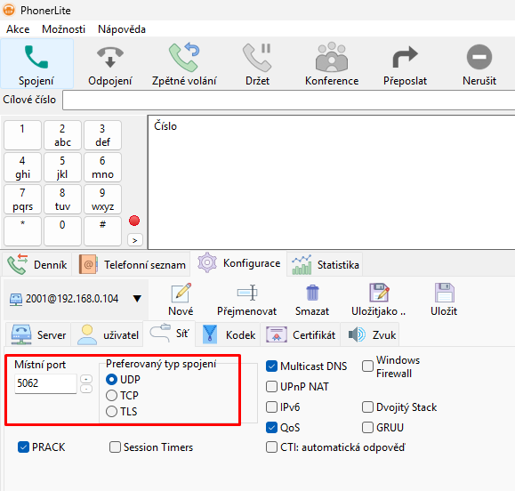
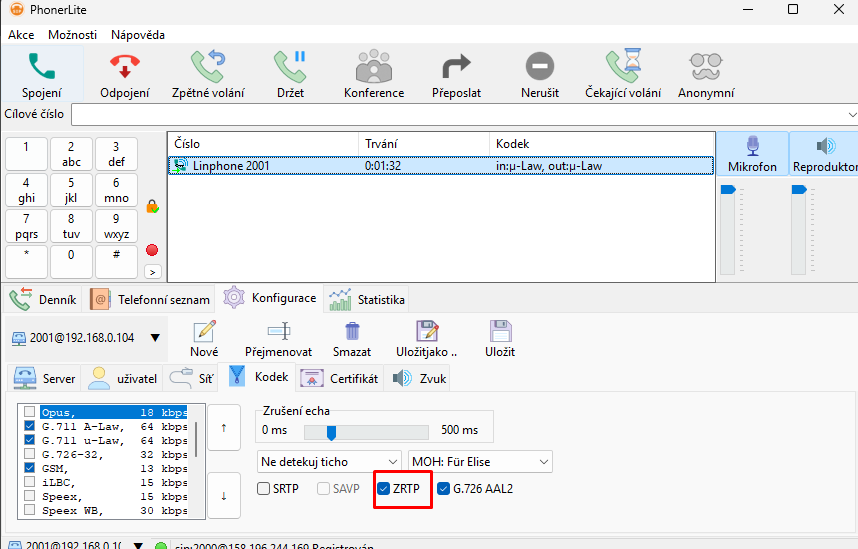
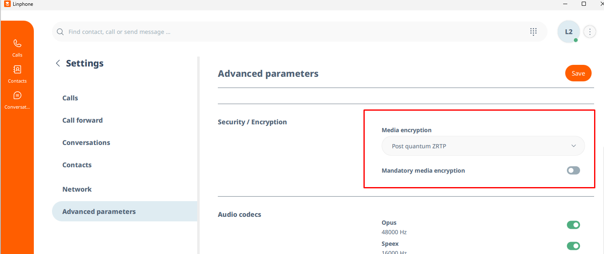
Pri prvom hovore Linphone zobrazí Security check. Používateľ porovná overovací kód (SAS), ktorý PhonerLite zobrazuje pri ikone zámku, a vyberie zhodný kód. Po overení sa hovor označí ako Device trusted a End-to-end encrypted call.
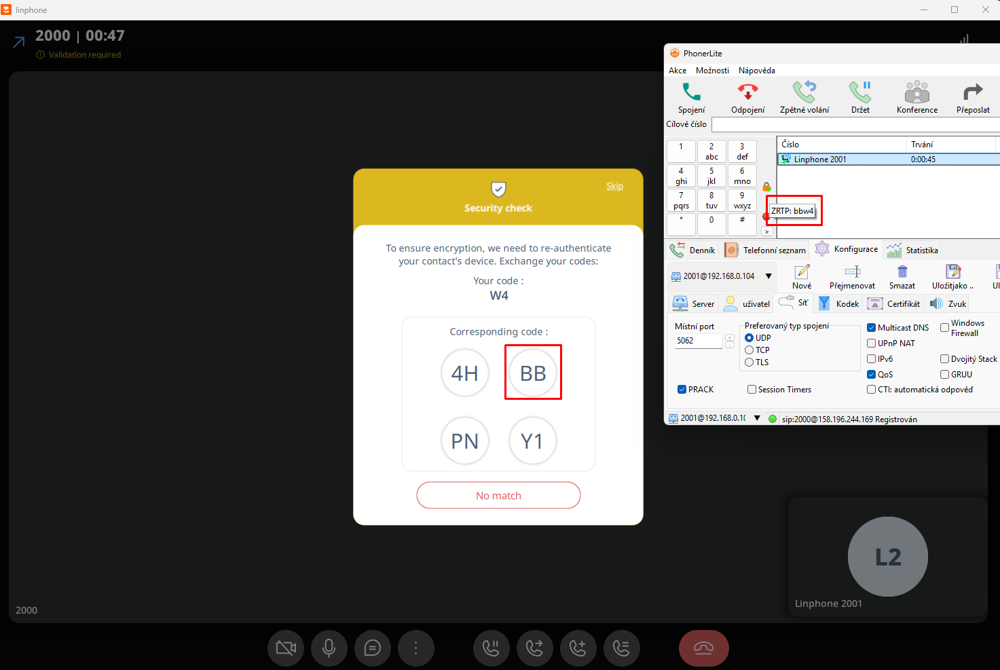
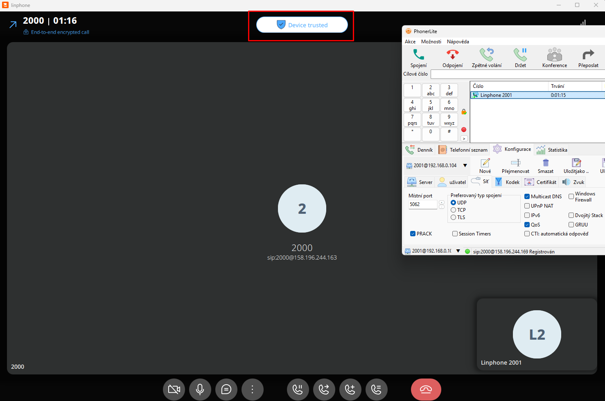
3.6 Inštalácia a konfigurácia Kamailio
-
Inštalácia balíkov a zastavenie služby pred konfiguráciou
apt update apt install -y kamailio kamailio-mysql-modules mariadb-server sngrep systemctl stop kamailio nano /etc/kamailio/kamailio.cfg -
Zapnutie databázy, autentifikácie a ukladania registrácií
Na začiatok súboru
kamailio.cfgsa pridajú direktívy:#!define WITH_MYSQL #!define WITH_AUTH #!define WITH_USRLOCDB -
Globálne parametre
V časti Global Parameters sa nastaví počúvanie na porte 5070, pretože port 5060 už na serveri používa Asterisk. TCP sa vypne.
listen=udp:158.196.244.169:5070 alias=158.196.244.169:5060 disable_tcp=yes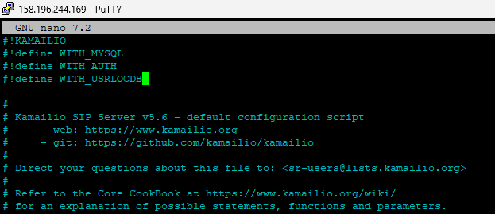
Obr. 8 Direktívy #!definena začiatku súboru.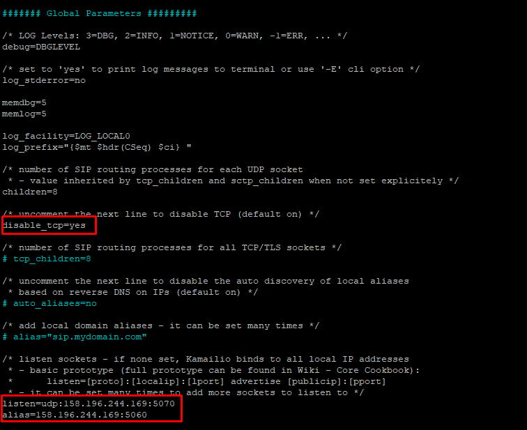
Obr. 9 Upravené globálne parametre. -
Nastavenie nástrojov kamctl / kamdbctl
SIP_DOMAIN=158.196.244.169 DBENGINE=MYSQL DBHOST=localhost DBNAME=kamailio DBRWUSER="kamailio" DBRWPW="pepa" DBROUSER="kamailioro" DBROPW="pepa" DBROOTUSER="root"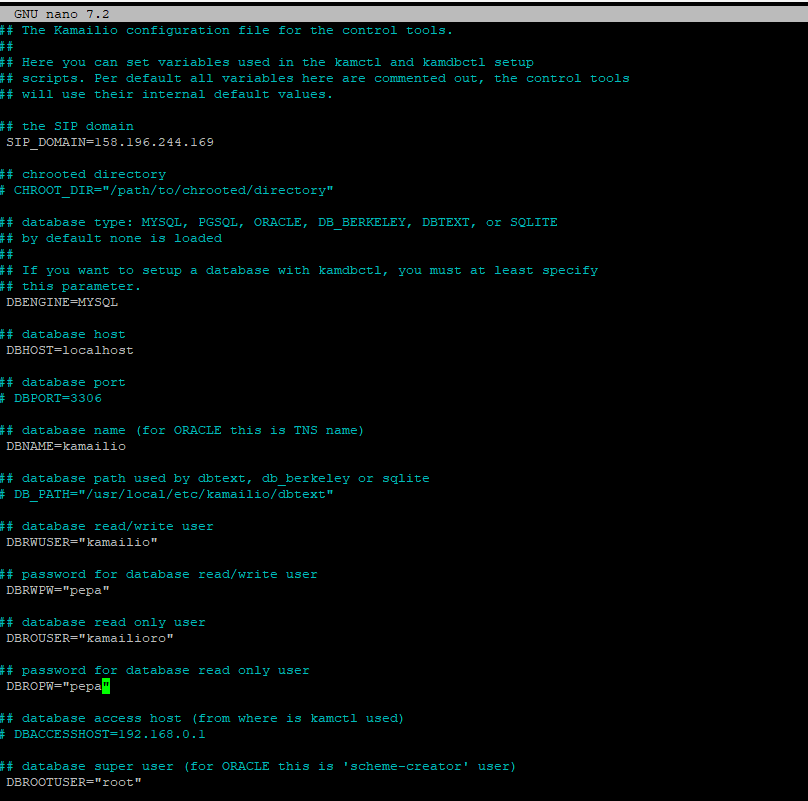
Obr. 10 Súbor kamctlrcs nastavením SIP domény a databázy.
3.7 Databáza, účty a spustenie
systemctl start mariadb
/usr/sbin/kamdbctl create # na otázku o znakovej sade zadať: utf16
/usr/sbin/kamctl add 2000 pepa_2000 # SIP účty
/usr/sbin/kamctl add 2001 pepa_2001
/usr/sbin/kamailio -c -f /etc/kamailio/kamailio.cfg # kontrola konfigurácie
systemctl reset-failed kamailio
systemctl start kamailio
systemctl status kamailio --no-pager
/usr/sbin/kamctl db show subscriber # kontrola účtov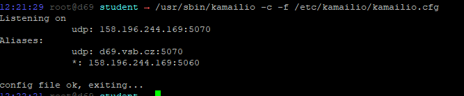
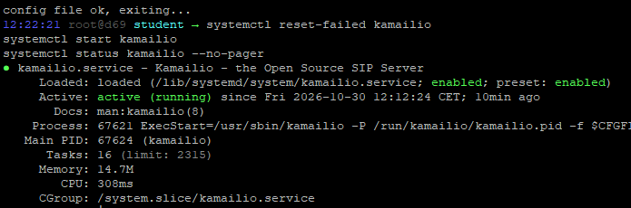
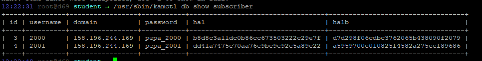
subscriber. Stĺpce ha1 obsahujú MD5 hash pre digest autentifikáciu.3.8 Registrácia a hovor cez Kamailio
Oba telefóny sa preregistrujú na Kamailio: proxy/registrar aj doména je 158.196.244.169:5070. V PhonerLite sa lokálny port zmení na 5070 a ZRTP zostáva zapnuté. Stav Registrovaný potvrdzuje úspešnú autentifikáciu voči databáze.
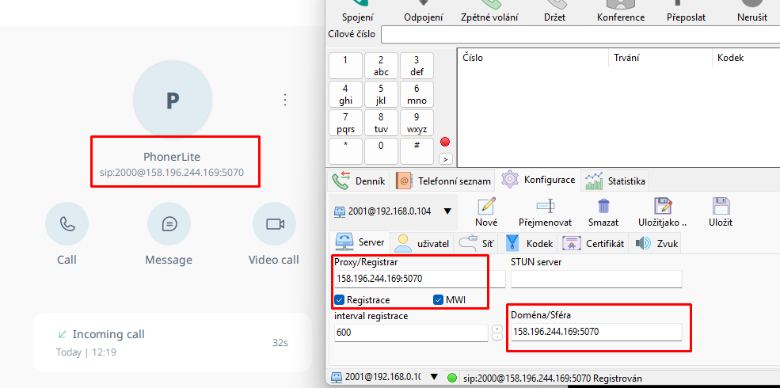
sip:2000@158.196.244.169:5070, vľavo prichádzajúci hovor v Linphone.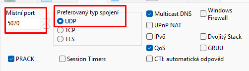
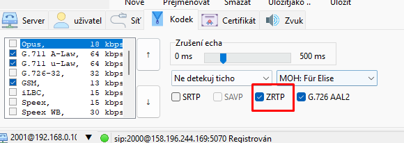
Hovor prebehne rovnako ako pri Asterisku: overenie SAS kódu a stav Device trusted. Kamailio preposiela len SIP správy a do RTP toku nevstupuje, preto ZRTP funguje bez akejkoľvek úpravy servera.
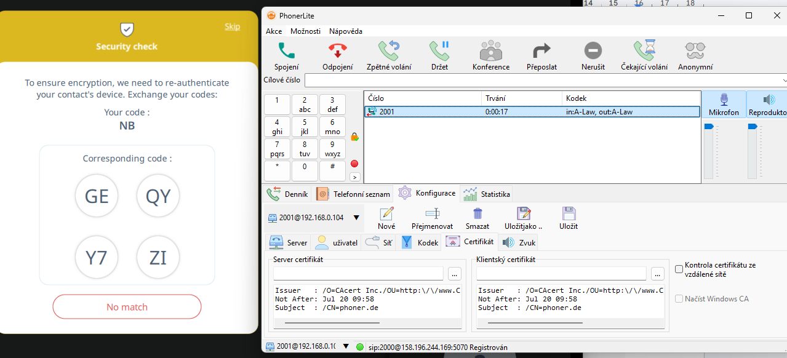
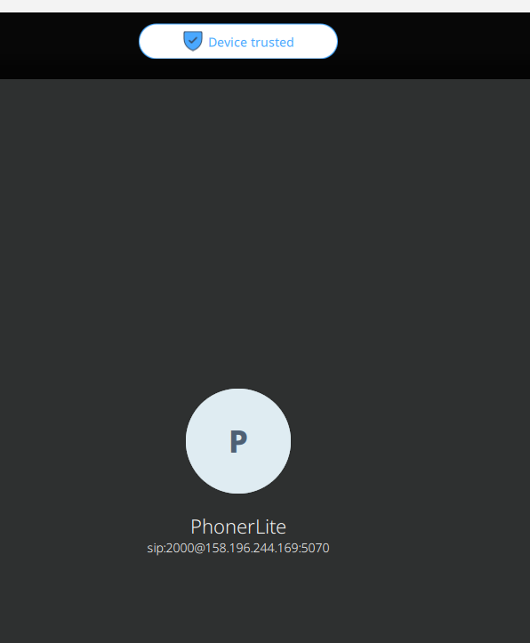
sip:2000@158.196.244.169:5070.04Vlastný názor a prínos
ZRTP považujeme za veľmi praktické riešenie: šifrovanie fungovalo medzi dvoma rôznymi aplikáciami, cez ústredňu aj cez proxy, a nebolo potrebné zriaďovať certifikáty. Bezpečnosť však stojí na dvoch veciach, ktoré ZRTP samo nevyrieši.
Silné stránky
- Kľúč nepozná ani ústredňa, ani proxy, takže ani prevádzkovateľ servera nemôže hovor odpočúvať.
- Žiadna PKI, stačí podpora v telefónoch.
- Linphone už ponúka postkvantovú variantu.
Slabé stránky
- Ochrana pred MitM závisí od toho, či používateľ SAS kód naozaj porovná, a nie len klikne na Skip.
- Signalizácia ostala nešifrovaná (UDP), takže je vidieť, kto komu volá.
- V laboratóriu boli použité slabé heslá (
pepa), v praxi neprijateľné.
Prínos projektu: praktické porovnanie správania ZRTP pri ústredni (Asterisk, kde bolo nutné zapnúť direct_media) a pri čistej proxy (Kamailio, bez úprav), overenie kompatibility PhonerLite a Linphone a doplnenie návodu o vysvetlenie parametrov. Pre produkčné nasadenie odporúčame doplniť SIP cez TLS, silné heslá a ochranu proti útokom hrubou silou (napr. modul pike v Kamailio alebo fail2ban).
05Záver a výsledky
- Asterisk 20.21.0 skompilovaný zo zdrojových kódov a spustený ako systémová služba.
- Linky 2000 (PhonerLite) a 2001 (Linphone) zaregistrované cez PJSIP, vzájomné volanie funguje.
- Hovor cez Asterisk šifrovaný ZRTP, overený porovnaním SAS kódu (Device trusted).
- Kamailio 5.6 s autentifikáciou účtov voči databáze MariaDB beží na porte UDP 5070.
- Hovor cez Kamailio šifrovaný ZRTP end-to-end bez akejkoľvek úpravy servera.
V projekte sa podarilo prakticky nasadiť dve odlišné VoIP platformy a na oboch overiť koncové šifrovanie hovoru. Ústredňa Asterisk 20 bola skompilovaná zo zdrojových kódov s pribalenou knižnicou PJSIP. Linky 2000 a 2001 boli nakonfigurované s autentifikáciou menom a heslom a jednoduchý dialplan zabezpečil vzájomné volanie. V druhej fáze bola na tom istom serveri nasadená SIP proxy Kamailio na samostatnom porte 5070, s overovaním účtov voči databáze MariaDB a s ukladaním registrácií. Oba softvérové telefóny, PhonerLite aj Linphone, sa úspešne zaregistrovali na obe platformy.
Najdôležitejším zistením je, že pri ZRTP rozhoduje architektúra servera. Asterisk ako ústredňa (B2BUA) štandardne preposiela hlas cez seba a ZRTP nepodporuje. Šifrovaný hovor preto fungoval až po zapnutí direct_media=yes, keď sa médiá presmerovali priamo medzi telefóny. Kamailio ako čistá SIP proxy do mediálneho toku vôbec nevstupuje, takže ZRTP fungovalo bez akejkoľvek úpravy servera. V oboch prípadoch platí, že kľúč si dohodli iba koncové zariadenia a server ho nikdy nepoznal. Ani administrátor ústredne či proxy teda hovor nedokáže dešifrovať.
Úspešný test potvrdil aj vzájomnú kompatibilitu dvoch rôznych implementácií ZRTP. Linphone nastavený na Post-quantum ZRTP sa dohodol s PhonerLite a po porovnaní SAS kódu oba telefóny označili spojenie ako dôveryhodné. Práve krok s porovnaním SAS je pritom kritický: ak ho používateľ preskočí, ZRTP stále šifruje, ale už nechráni pred útokom typu Man-in-the-Middle.
Riešenie má aj obmedzenia, ktoré by bolo potrebné odstrániť pred reálnym nasadením. Signalizácia SIP ostala nešifrovaná (UDP), takže útočník v sieti vidí, kto komu a kedy volá, hoci obsah hovoru nepočuje. Laboratórne heslá boli slabé a server nemal ochranu proti útokom hrubou silou. Pre produkčné prostredie odporúčame prejsť na SIP cez TLS, používať silné náhodné heslá, v Kamailio zapnúť modul pike alebo nasadiť fail2ban a pri Asterisku zvážiť aj podporu SRTP s DTLS pre klientov, ktorí ZRTP nepodporujú. Projekt tak ukázal, že ZRTP je jednoduchý a účinný spôsob, ako zabezpečiť obsah hovoru, ale úplnú ochranu VoIP komunikácie dosiahneme iba v kombinácii so zabezpečenou signalizáciou.
06Zdroje
- VŠB-TUO. Exercise 5 [zadanie cvičenia]. LMS VŠB-TUO. Dostupné z: lms.vsb.cz/…/exercise_5_v2.pdf
- ROSENBERG, J. et al. RFC 3261: SIP: Session Initiation Protocol. IETF, 2002.
- SCHULZRINNE, H. et al. RFC 3550: RTP: A Transport Protocol for Real-Time Applications. IETF, 2003.
- BAUGHER, M. et al. RFC 3711: The Secure Real-time Transport Protocol (SRTP). IETF, 2004.
- McGREW, D.; RESCORLA, E. RFC 5764: DTLS Extension to Establish Keys for SRTP. IETF, 2010.
- ZIMMERMANN, P.; JOHNSTON, A.; CALLAS, J. RFC 6189: ZRTP: Media Path Key Agreement for Unicast Secure RTP. IETF, 2011.
- Sangoma. Asterisk Documentation. Dostupné z: docs.asterisk.org
- Kamailio. Kamailio SIP Server. Dostupné z: kamailio.org
- Belledonne Communications. Linphone. Dostupné z: linphone.org
- PhonerLite. Dostupné z: phonerlite.de